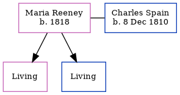

Hilda Mary Coombs (née Packman) 1896 - c1934
[ Home ] | [ Calendar ] | [ Surnames Index ] | [ Census Index ] | [ Family History ]Hilda Packman, the wife of Nelson Victor Coombs (the second cousin twice-removed on the mother's side of Nigel Horne), was born in 18961. She married Nelson (an agricultural laborer) at Christ Church, Dunkirk, Kent, England on Nov 11, 19222.
She died c. Feb 1934 in Canterbury, Kent, England1.
Citations
- England & Wales deaths 1837-2007 - Findmypast
- England Marriages 1538-1973 - Findmypast
Media
Canterbury Marriages Image - GBPRS-CANT-005265413-00228
England Marriages 1538-1973 Transcription - R_848275873
England & Wales marriages 1837-2008 Transcription - BMD-M-1922-4-AZ-000224-049
England & Wales deaths 1837-2007 - BMD/D/1934/1/AZ/000210/076
Family Tree
Generated by ged2site. Last updated on Jun 11, 2024